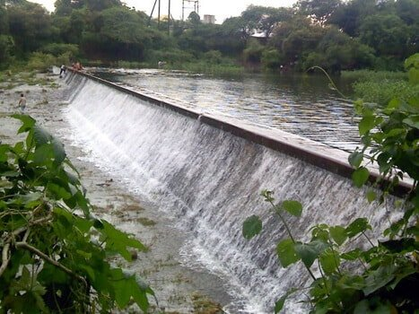
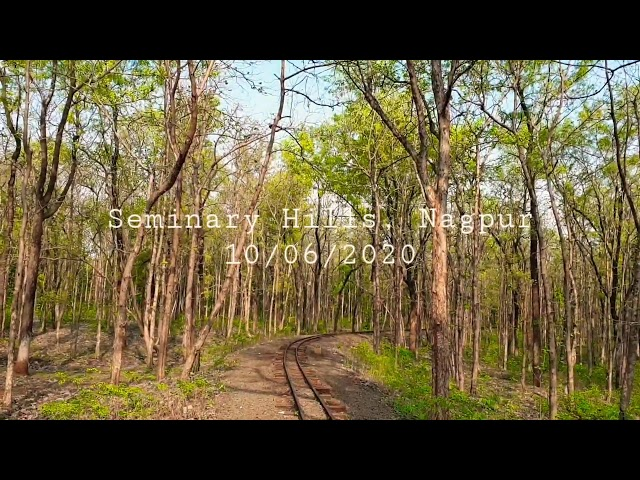
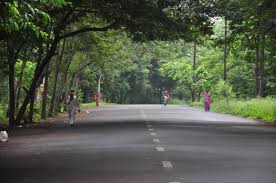
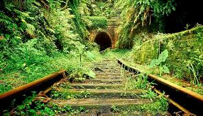

About Seminary Hills
Do you want to go for a nice hike up the hill? Why put it off any longer? Put on your hiking shoes and work up a sweat. Seminary Hill is one of Nagpur's most popular tourist attractions and is named after the St. Charles Seminary, located on the hill's peak. Trekking through the wooded green trails is worth it for the spectacular city view at the top. Bal Udyan offers play areas and a toy train for kids. Visit Lourd Mata Church, stroll through Satpura Botanical Garden, or dine at local restaurants nearby. The hill is also home to the famous Hanuman Temple.
Location Map for Seminary Hills
Photo Gallery



